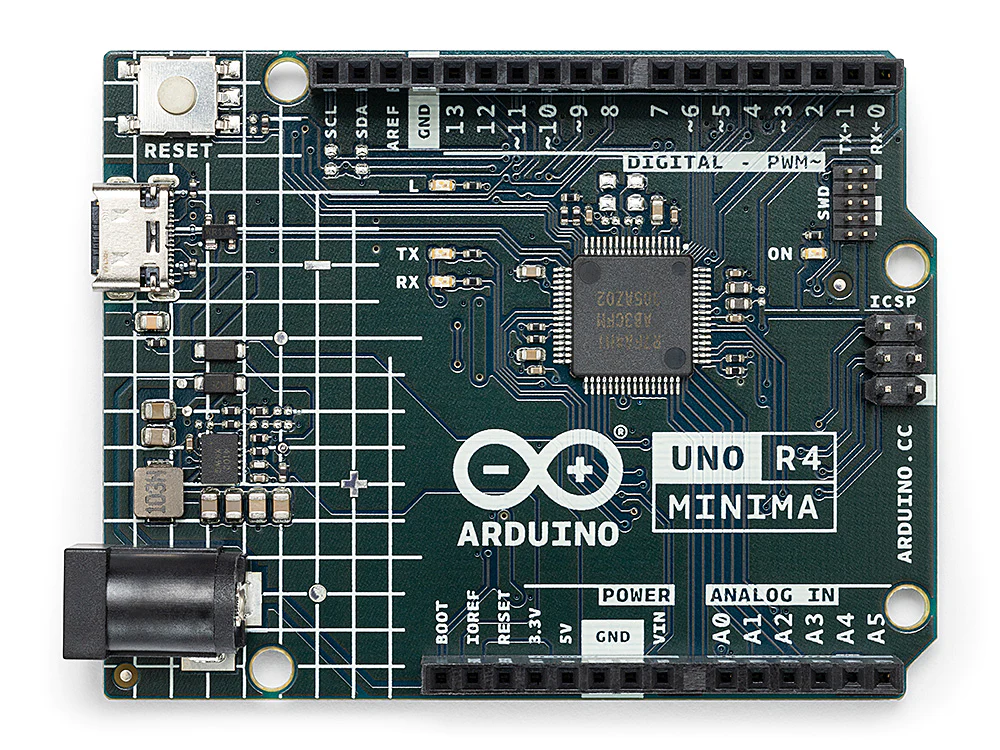

注釈
こんにちは、SunFounderのRaspberry Pi & Arduino & ESP32愛好家コミュニティへようこそ！Facebook上でRaspberry Pi、Arduino、ESP32についてもっと深く掘り下げ、他の愛好家と交流しましょう。
参加する理由は？
エキスパートサポート：コミュニティやチームの助けを借りて、販売後の問題や技術的な課題を解決します。
学び＆共有：ヒントやチュートリアルを交換してスキルを向上させましょう。
独占的なプレビュー：新製品の発表や先行プレビューに早期アクセスしましょう。
特別割引：最新製品の独占割引をお楽しみください。
祭りのプロモーションとギフト：ギフトや祝日のプロモーションに参加しましょう。
👉 私たちと一緒に探索し、創造する準備はできていますか？[ここ]をクリックして今すぐ参加しましょう！
Arduino UNO R4 Minima ボード


Arduino UNO R4 Minima は、Renesas社のRA4M1（Renesas RA4M1 Group Datasheet ）マイクロコントローラーを基盤とした開発ボードで、クラシックなUNO形状を持っています。以前のバージョンよりも高速で、メモリも豊富です。DAC、RTC、HIDといった組み込み機能が多数あります。UNO R4 Minimaは、 5V専用ボード です。14個のデジタルI/O、最大14ビット解像度の6つのアナログ入力、48MHzのクロック速度、32kBのSRAM、256kBのフラッシュメモリ、8kBのEEPROMが搭載されています。
技術仕様
| ボード | 名前 | Arduino® UNO R4 Minima |
|---|---|---|
| マイクロコントローラ | Renesas RA4M1 (Arm® Cortex®-M4) | |
| USB | USB-C® | プログラミングポート |
| Pins | Digital I/O Pins | 14 |
| Pins | Analog input pins | 6 |
| DAC | 1 | |
| PWM pins | 6 | |
| 通信 | UART | Yes, 1x |
| I2C | Yes, 1x | |
| SPI | Yes, 1x | |
| CAN | Yes 1 CAN Bus | |
| 電源 | 動作電圧 | 5 V |
| 入力電圧（VIN） | 6-24 V | |
| I/OピンあたりのDC電流 | 8 mA | |
| クロック速度 | メインコア | 48 MHz |
| メモリ | RA4M1 | 256 kB Flash, 32 kB RAM |
| 寸法 | 幅 | 68.85 mm |
| 長さ | 53.34 mm | |
その他